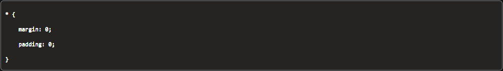

HTML
- Hypertext Markup Language
- Standard markup language for creating Web pages.
- HTML describes the structure of a Web page.
- The head element contains information about the webpage.
- The body element represents the visible content shown to the user.
- Semantic HTML elements can be understood by both Users and Developers. Example: body, title, header, footer
- Non-Semantic HTML elements are mainly understood by Developers. Example: h1, p, li, ul
CSS
- Cascading Style Sheets (CSS)
- Programming language used by developers to define how webpage content is presented to users.
- Inline CSS
- Style an element directly in the HTML file
- A single change to the CSS rule will apply to all tagged page elements.
- Useful for quick and permanent change
- Less flexible, because each inline style must be edited individually whenever you make a design change.
- Ex: (h1 style="color:red;")Prework Study Guide(/h1)
- Internal style sheet
- May be used if one single HTML page has a unique style.
- Configure CSS classes and IDs, which are used to identify elements, to style multiple elements in the page code.
- *A single change to the CSS rule will apply to all tagged page elements.*
- External CSS style sheet
- Most common way to style a webpage
- Preferred in most cases because it allows developers to keep all their CSS rules in a separate file.
- When using an external style sheet, we link the file using a (link) element placed in the HTML's (head) element.
- Ex. (link rel="stylesheet" href="./assets/style.css")
- CSS Rule
- Declarations contain two important components:
- The CSS property we want to apply.
- The value of the property.
- In the example, the declaration color: blue; includes the CSS property color and the value for that property, blue.

- margin property
- Acts much like a margin in a word processing document.
- Indicates how much space we want around the *outside* of an element.
- When the margin property is set to 0, we are indicating that we want NO extra space around the element.
- padding property
- Often confused with margin
- Adds space around the content *inside* an element.
- Increase padding will make the entire element bigger because the padding, while transparent, is located inside the element, whereas the margin is the transparent buffer outside an element.
- To understand this better, it is important to know that every HTML element is essentially a box. Each box consists of margins outside the element, and the element's borders, padding, and content. This is sometimes referred to as the CSS box model. The image below illustrates this box model:

- To apply a rule to all the elements visible on the page, we use the * symbol.
- In this rule, we have declared that ALL of the elements on the page will have the style properties margin and padding set as 0:

- Rather than repeating a rule which would add more lines of code and repetition, two or more elements that will share the same styling can be grouped together. This helps us write Do Not Repeat Yourself (DRY) code.
- Do Not Repeat Yourself (DRY) is a coding principle that encourages developers to reuse or share pieces of code in order to reduce the number of lines of code that need to be written or maintained. DRY can greatly reduce the overall size and complexity of a codebase.
- Class Attribute
- Class attributes allow us to share a CSS rule to any element wo choose by assigning the rule to a class attribute with a class selector. Then the class attribute can be assigned to the element in the HTML, enabling us to freely choose which elements will be assigned the CSS rule.
Git
- git status: checks what branch we are currently on
- git checkout -b branch-name: creates a new branch and switches to it
- The Main branch is live and is what the End-User can see.
- The Develop branch serves as an integration branch for features.
- The Feature branch uses the Develop branch as their Parent branch.
- git checkout -b "feature_branch" : *Make sure to not be on the Main branch*
- Features should never interact directly with the Main branch.
- It's also convenient to tag all commits in the Main branch with a version number.
JavaScript
- JavaScript is a powerful programming language that can add interactivity to a website.
- Control flow
- The order in which a computer executes code in a script.
- Conditional Statements
- A statement that is of the form "If p, then q" is a conditional statement. Here 'p' refers to 'hypothesis' and 'q' refers to 'conclusion'.
- If/Then statement.
- Loops
- Loops can execute a block of code a number of times.
- Loops are handy, if you want to run the same code over and over again, each time with a different value.
- Array
- Single variable that is used to hold a group of data. Arrays are typically used to hold data that is related in some way.
- const cars = ["Saab", "Volvo", "BMW"];
- Index
- Indicates the position of the element within the array (starting from 0) and is either a number or a field containing a number.
- Commenting out code
- To comment out multiple lines of JavaScript code, put /* before and */ after the block of code.